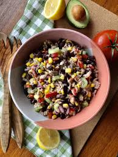

Almoços
Deliosos almoços com rápido tempo de preparação.

Frango Grelhado com Legumes Salteados
Um delicioso frango grelhado com legumes para dar a energia do dia.
Arroz de Coco com Camarões
Uma alternativa diferente, para paladares mais sofisticados.

Salada de Atum com Feijão Preto
Um prato cheio de sabor e gostos, ótima proposta!